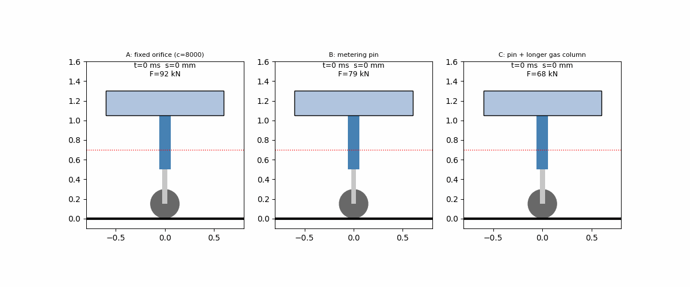
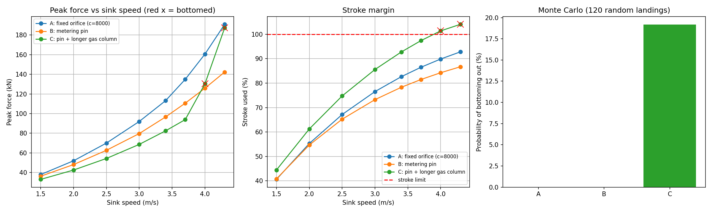
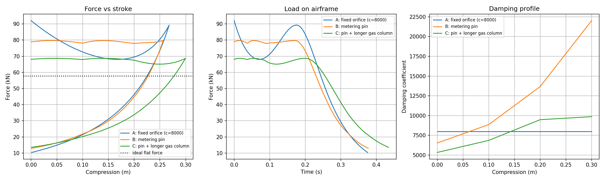
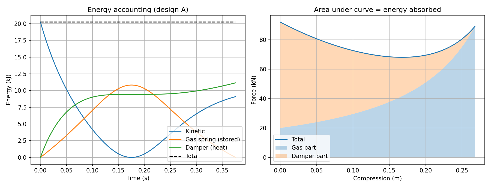

A 1-DOF oleo-pneumatic main-gear model comparing three strut designs at the design landing and under off-design and Monte Carlo conditions.
Loading results…
| Design | Mean peak force (kN) | 95th-percentile peak force (kN) | Bottoming-out probability (%) |
|---|
| Scenario | A: fixed orifice | B: metering pin | C: pin + longer gas column |
|---|
Design the main-landing-gear strut of a transport aircraft that absorbs touchdown energy with low peak load without bottoming out — not just at the design landing, but across the off-design envelope (harder sink speeds, low lift, low gas charge, extra mass).
Equation of motion: m·s̈ = m·g·(1 − lift) − Fstrut, where s is strut compression (down positive), m the mass per gear, lift the lift-to-weight ratio, and Fstrut the total strut force.
Strut force: a nonlinear gas spring Fa = F0·(h0/h0−s)n (n = 1.35, F0 = 20 kN, h0 = 0.40 m base) plus quadratic orifice damping Fd = c(s)·v·|v| (with weaker rebound damping, factor 0.30) plus a stiff hard stop (K = 5 MN/m) beyond the 0.35 m stroke.
solve_ivp (1 ms output steps, rtol 1e-7, atol 1e-9) until the stroke rebounds (terminal event).results/: three plots, an animation GIF, scenario_results.csv, and results.json — metrics are computed by running landing_gear.py, never hard-coded.The results are rendered dynamically above from results/results.json. In summary: at the design landing, design C carries the lowest peak load, but under off-design and Monte Carlo conditions it spends its stroke margin and bottoms out, while design B stays within stroke everywhere and design A carries higher loads but also stays within stroke.



